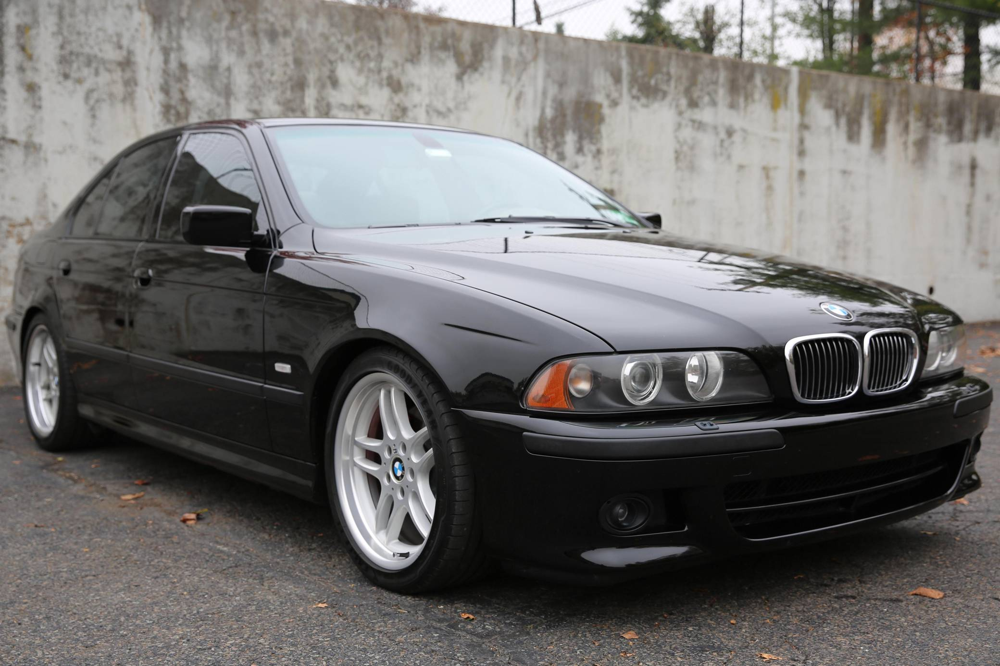

Nicholas Elkhaouli
ABOUT ME
One thing about me is that I have a huge passion for cars especfially Bmw's, I own 2 Bmw's, a 2010 bmw 528i and a 2003 Bmw 540i M-sport. Other things I like to do is to hangout with my friends/gf or to play video games and spend some time with myself. Along with going to school I also work Full time at Electric Boat. When I first started it was hard to balance both school and work at the same time but since then I have been able to manage both of them together.

SCHOOLING
- Cranston West High School
- Western Hills Middle School
- Garden City Elementary School

HOBBIES